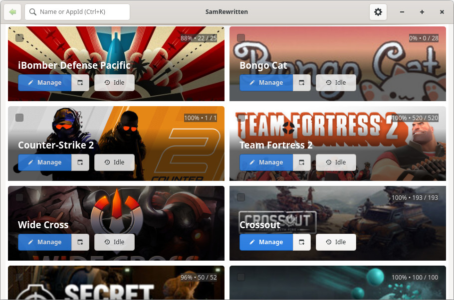
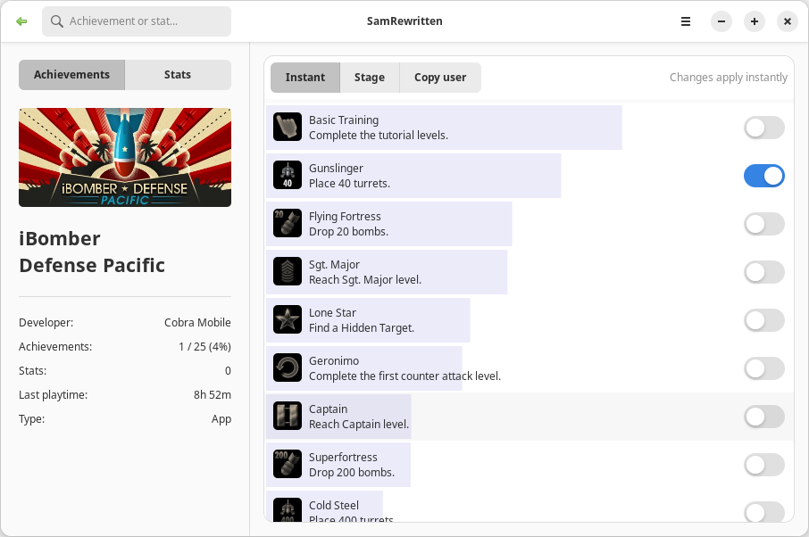

什么是 SamRewritten？
SamRewritten 是一款工具，可让你在自己的 Steam 账户上解锁和重新锁定成就。 它还可以编辑支持此功能的游戏和应用的统计数据。虽然成就没有任何经济价值， 但它们被广泛用于展示收集进度和炫耀成绩。SamRewritten 同时提供精美的 GTK 图形界面和可脚本化的命令行工具。


功能特性
- 一键锁定和解锁特定成就
- 为全部或选定的应用批量锁定/解锁成就
- 在自定义时间段内定时解锁成就
- 复制其他用户的解锁时间并在你的账户上重现
- 实时编辑游戏统计数据
- 按单个应用或批量导入/导出成就和统计数据（JSON）
- 挂机（伪装游戏中）：显示为游戏中，直到你手动关闭
- 进阶统计：游戏库总览、按天显示的解锁活动热力图，以及随时间变化的平均完成度（详见下文）
- 审视看起来异常的成就解锁高峰，看清自己历史记录中的突出之处
- 可选的本地变更记录，记下 SamRewritten 的每一次改动，并可一键撤销
- 浅色和深色主题
- 除英语外，还支持法语、西班牙语、德语、意大利语、波兰语、希腊语、俄语、乌克兰语、土耳其语、日语、简体中文、繁体中文和巴西葡萄牙语
- 功能完备且无需 GTK 的命令行工具（使用文档，英文）
SamRewritten 的翻译均由社区贡献。你无需是程序员也能参与——翻译大多只是填写一个文本文件而已。欢迎任何语言的贡献，请参阅翻译指南开始。
进阶统计
点击侧边栏中的 Steam 个人资料，即可打开一个关于整个游戏库（而非单个游戏）的页面。页面上的所有内容都在本地计算，数据来自 Steam 早已保存在你磁盘上的成就记录 —— 因此其完整程度与那些记录完全一致。
- 游戏库总览 —— 拥有的游戏数、已解锁成就数、平均完成度、完美游戏数与总游戏时长。
- 解锁活动 —— 日历热力图，每天一格，并可切换年份。将鼠标悬停在任意一天上，即可看到当天解锁了多少成就，以及来自哪款游戏。
- 完成度变化 —— 在你已经开始游玩的游戏中，平均完成度自第一次解锁至今的变化曲线。每当你开始一款新游戏，它都会下降，这正是游戏库真实的样子。
- 异常活动 —— 解锁速度过快或过于整齐、不像正常游玩的成就序列，并附上简短说明指出其突出之处。
- SamRewritten 的改动记录 —— 需手动开启，默认关闭。开启后，SamRewritten 的每一次解锁、重新锁定与统计数据修改都会记录到本地文件中，可供查看与撤销。
异常活动只提供线索，而非结论。某些游戏会在首次启动时一次性授予全部成就，看起来与批量解锁完全相同；页面会如实说明这一点，而不会妄下判断。
SamRewritten 与其他 Steam 成就管理器的对比
SamRewritten 与其他 Steam 成就管理器及解锁工具的对比——包括初代 由 Gibbed 开发的 Steam 成就管理器（SAM）、 Samira 以及 Steam Game Idler。在这四款工具中，只有 SamRewritten 完整支持 Windows、Snap、Flatpak 和原生 Linux 版 Steam，也只有它支持 JSON 导入和导出。它免费、开源、无广告，也没有付费版本。
| 功能 | SamRewritten | SAM (Gibbed) | Samira | Steam Game Idler |
|---|---|---|---|---|
| 支持的 Steam 安装方式 | ||||
| Windows | 支持 | 支持 | 不支持 | 支持 |
| Snap | 支持 | 不支持 | 不支持 | 部分支持，见注释1 |
| Flatpak | 支持 | 不支持 | 不支持 | 部分支持，见注释1 |
| 原生 / 软件包 | 支持 | 不支持 | 支持 | 部分支持，见注释1 |
| 功能 | ||||
| 定时解锁在选定的时间段内逐步解锁 | 支持 | 不支持 | 不支持 | 支持 |
| 复制解锁时间复制其他用户的解锁顺序和间隔 | 支持 | 不支持 | 不支持 | 部分支持，见注释2 |
| 导入/导出以 JSON 文件备份和恢复进度 | 支持 | 不支持 | 不支持 | 不支持 |
| 可脚本化通过命令行自动化，无需图形界面 | 支持 | 不支持 | 不支持 | 部分支持，见注释3 |
| 挂卡挂机游戏以获取集换式卡牌掉落 | 不支持 | 不支持 | 不支持 | 支持 |
| 无广告应用内没有广告 | 支持 | 支持 | 支持 | 部分支持，见注释2 |
| 项目 | ||||
| 图形界面技术栈构建界面所用的技术 | GTK 4 / libadwaita | WinForms (.NET) | Tauri (React) | Tauri (Next.js) |
| 许可证项目采用的许可证 | GPL-3.0 | zlib | GPL-3.0 | Elastic-2.0 |
最后核对于 2026 年 10 月，依据各项目的代码仓库和文档。
- Steam Game Idler 自 6.1.0 版起支持 Linux，且无需本地 Steam 客户端，因此与 Steam 的安装方式无关。它在 Linux 上只能直接登录 Steam，因而无法管理 Team Fortress 2、Dota 2、CS2、Left 4 Dead 2 和 Portal 2。
- Steam Game Idler 的免费版会显示广告，且无法导入解锁时间。去除广告需要付费的 PRO 订阅（每月 2 美元起）；导入解锁时间需要每月 4 美元的 Gamer 档。
- Steam Game Idler 是一款图形应用；其引擎 SteamUtility 是一个独立的命令行工具，仅限 Windows：Linux 版不包含它。
常见问题
SamRewritten 能在 Linux 上运行吗？
可以。它提供 Linux AppImage，并已上架 AUR（samrewritten-git）。它支持 Snap Steam、
Ubuntu/Debian 多架构以及 .deb 安装，还支持使用 Steam 运行时的发行版，例如 Gentoo 和 Arch。
什么是 Steam 成就管理器？
Steam 成就管理器（SAM）可让你在自己的 Steam 账户上解锁和重新锁定成就，并编辑 游戏统计数据。SamRewritten 是一款现代化的开源 Steam 成就管理器，支持 Linux 和 Windows。
SamRewritten 是免费和开源的吗？
是的——它免费且开源，托管在 GitHub 上。它与 Valve Corporation 或 Microsoft 无任何关联。
SamRewritten 支持 Flatpak 版的 Steam 吗？
支持。SamRewritten 可与 Flatpak 版本的 Steam 配合使用。Snap 和 .deb 安装的 Steam 也同样受支持。
SamRewritten 能显示我的 Steam 成就统计吗？
可以。点击侧边栏中的个人资料即可打开统计页面，其中包含游戏库总览、可切换年份的每日解锁活动热力图、平均完成度随时间变化的曲线图，以及对看起来异常的解锁高峰的审视 —— 详见进阶统计。所有内容均在本地根据 Steam 早已保存在你磁盘上的成就记录计算得出。
我可以通过命令行使用 SamRewritten 吗？
可以。命令行工具无需 GTK，可以列出应用/成就/统计数据、批量锁定/解锁、 编辑统计数据、导入/导出 JSON，以及挂机（伪装游戏中）。每条命令都以 JSON 输出，便于脚本调用 —— 完整的命令参考请见 CLI 使用文档（英文）。
SamRewritten 与其他 Steam 成就管理器相比如何？
SamRewritten 可在 Linux 和 Windows 上运行，并支持 Windows、Snap、Flatpak 和原生方式安装的 Steam。Gibbed 的初代 Steam 成就管理器仅支持 Windows，Samira 仅支持 Linux 且不支持 Flatpak。SamRewritten 还提供定时解锁、复制其他用户的解锁时间、JSON 导入和导出以及命令行界面。Steam Game Idler 也有其中部分功能，但其免费版会显示广告，部分功能需要付费订阅。详见完整对比。
致谢
SamRewritten 深受 Gibbed 开发的 Steam 成就管理器和 jsnli 开发的 Samira 的启发，也受到 SamRewritten 旧版的启发。 感谢所有贡献者、用户以及给项目点星的朋友。